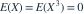
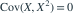

，
， 。下列结论哪项正确？
。下列结论哪项正确？- A
- B
- C
 不相关但不独立
不相关但不独立 - D 独立
我已思考，展开答案与解析
正确答案：C
- 对称性给出

，故
。  是
是  的非恒定确定函数，二者不独立。
的非恒定确定函数，二者不独立。
易错提醒零相关只排除线性相关；非联合正态时不能推出独立。
数学三·概率统计基础专题 · 数学三概率统计基础专题·原创第23题
按数学三常见概率统计知识点原创；不是历年真题或教材原题。
，。下列结论哪项正确？ 不相关但不独立 独立
，故
。 是 的非恒定确定函数，二者不独立。数学三·概率统计基础专题 · 数学三概率统计基础专题·原创第23题
按数学三常见概率统计知识点原创；不是历年真题或教材原题。